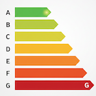
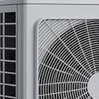

Tout ce qu'il faut savoir sur la rénovation énergétique et l'habitat autonome
Catégories d'articles :
Obtenez les meilleures résultats pour votre habitat et votre portefeuille.


Akelia est un réseau d'artisans locaux partageant des valeurs de transparence et de qualité sous une identité commune. Ici, il n'y a ni sous-traitance, ni centre d'appel : vous êtes en contact direct avec l'artisan le plus proche de chez vous. Qu'il s'agisse d'isolation, de menuiserie, de chauffage ou d'énergie solaire, vous avez la certitude de confier votre projet à des experts locaux engagés.
Pour les projets les plus ambitieux, Akelia vous met en relation avec un architecte du réseau spécialisé en rénovation énergétique et construction neuve. Il vous accompagne sur les chantiers complexes pour concevoir une solution globale, cohérente et performante. Comme pour nos artisans, vous échangez sans intermédiaire.
%20(1).jpeg)
%20copie.jpeg)
%20_%20(Vide%CC%81o)%20v2%20copie.png)
%20copie.png)
%20Comment%20piloter%20sa%20maison%20pour%20re%CC%81duire%20de%2030%20%20sa%20facture.png)


.avif)